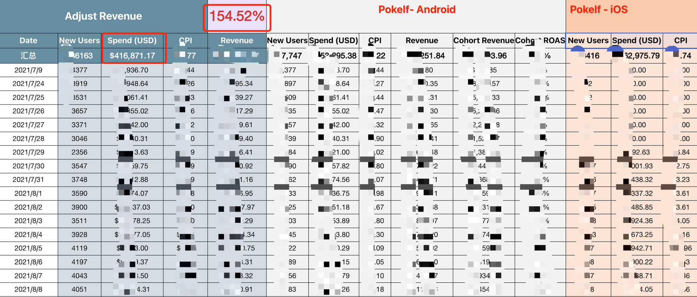
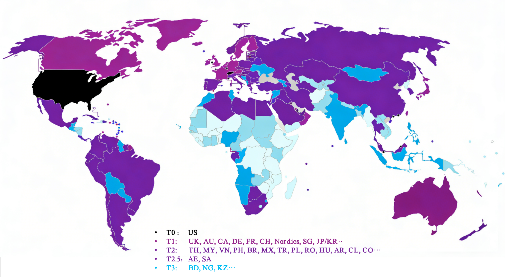
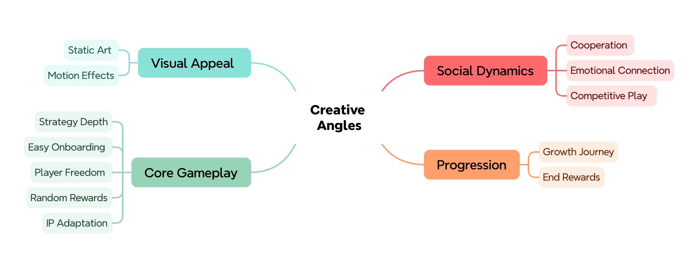
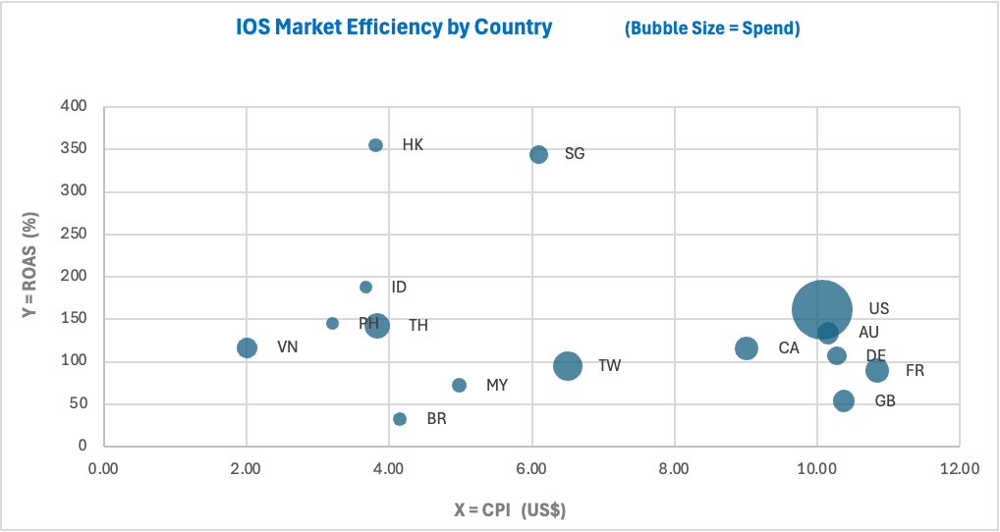
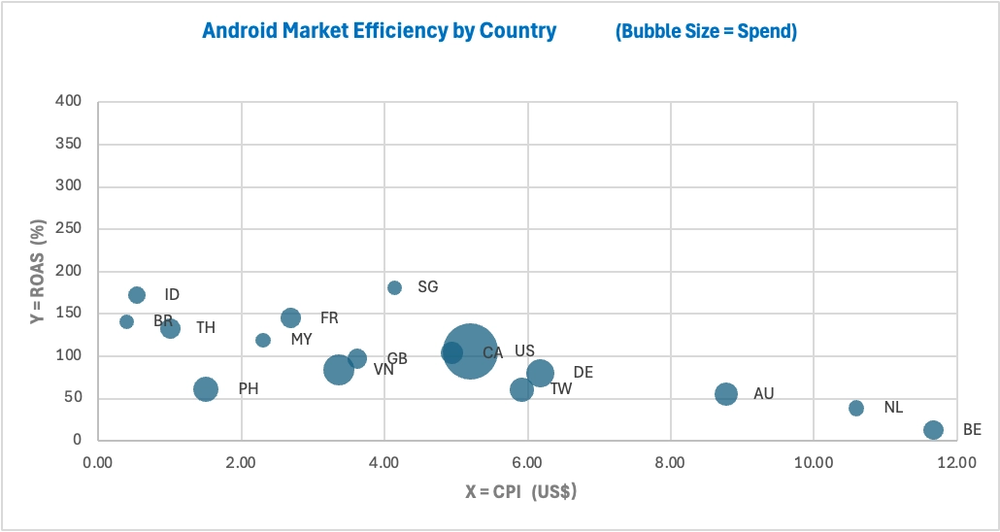
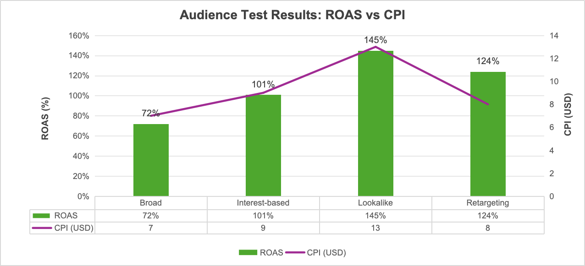
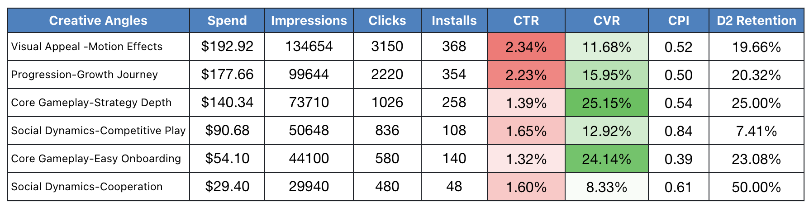

Market tiering framework — prioritising by value, cost, and scalability
Markets were tiered by economic development into different groups: developed, scalable, and emerging.

Audience testing framework — four audience groups with different objectives
Four audience groups, each with a different role in the testing ladder:
Based on product understanding and competitor research, I structured key creative directions for asset planning. The framework translated product features, player motivations, and market learnings into clear messaging angles such as visual appeal, core gameplay, social dynamics, and progression.

Creative angle framework — mapping product features to messaging
We couldn't use the same strategy for Android and iOS because the performance profile was very different across the two platforms.
Android was better for scale. Besides Tier 1 markets, lower-cost regions like Indonesia, Thailand, and Brazil were also able to drive decent volume and strong returns.
iOS was more concentrated in high-value markets, so it made more sense to keep budget focused on Tier 1, while Southeast Asia worked better as a supporting market instead of a main investment area.
| Platform | Spend | Avg CPI | Avg ROAS | Key Markets |
|---|---|---|---|---|
| iOS 🍎 | xxx | xxx | xxx | US, SG, HK |
| Android 🤖 | xxx | xxx | xxx | US, ID, BR |
X = CPI, Y = ROAS / payback, Bubble size = spend

iOS Market Performance

Android Market Performance
From a strategic perspective, Retargeting and Lookalike were better for efficiency, while Broad was better for scale. Lookalike had the highest CPI but also the strongest ROAS, which showed that paying more for higher-quality similar users was justified.
| Audience | Spend (USD) | CPM (USD) | CPI (USD) | ROAS |
|---|---|---|---|---|
| Broad | 2,200 | 13.5 | 7.0 | 72% |
| Interest-based | 1,700 | 16.2 | 9.0 | 101% |
| Lookalike | 1,250 | 21.8 | 13.0 | 145% |
| Retargeting | 500 | 15.4 | 8.0 | 124% |

Overall, creatives focused more on visual appeal and progression feedback were better at driving clicks, while creatives centered on core gameplay delivered stronger conversion and retention. This suggested that what really kept users in the product wasn't just the visuals, but their understanding of the gameplay and the sense of progression.
